Panduan Penggunaan ResearcherHQ
Langkah demi langkah, ditulis dalam bahasa mudah, dengan tangkapan skrin sebenar daripada aplikasi — untuk sesiapa sahaja yang baru menggunakan ResearcherHQ.
SOP Pengguna — ResearcherHQ
Panduan langkah demi langkah untuk pengguna baharu ResearcherHQ. Setiap langkah dan
setiap tangkapan skrin dalam dokumen ini diambil terus daripada aplikasi sebenar yang
sedang berjalan (bukan mockup), pada commit 3f4d58d.
Nota penting: Sebahagian besar antara muka (butang, label, mesej sistem) dipaparkan dalam Bahasa Inggeris. Panduan ini menerangkan setiap langkah dalam Bahasa Melayu, tetapi nama butang/medan yang perlu anda cari di skrin akan ditulis dalam tanda petik seperti yang tertera di skrin — contoh: klik butang "Log in".
1Daftar Akaun
ResearcherHQ tidak menggunakan borang pendaftaran kata laluan biasa. Sebaliknya, sistem menghantar kata laluan sementara terus ke emel anda — anda tidak perlu mencipta kata laluan sendiri semasa mendaftar.
- Buka halaman log masuk ResearcherHQ. Klik butang "Create a free account" di bawah borang log masuk.
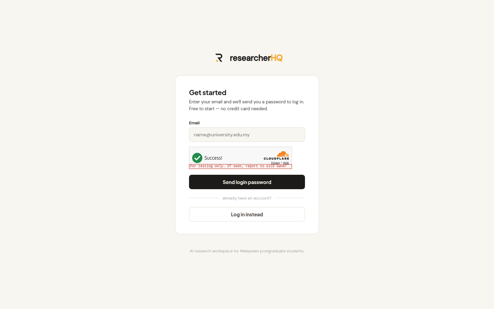
- Masukkan alamat emel anda. Selesaikan semakan keselamatan (kotak pengesahan kecil) yang muncul di bawah medan emel.
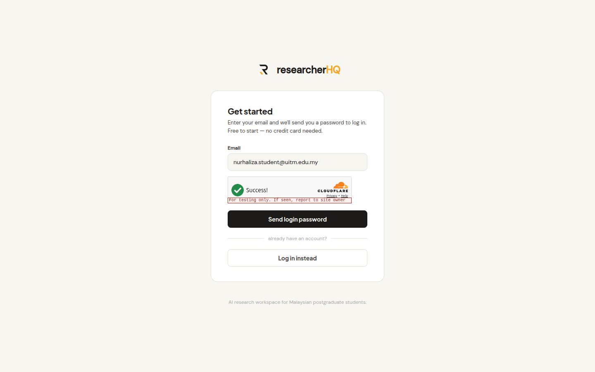
- Klik butang "Send login password". Sistem akan menghantar kata laluan sementara ke emel yang anda daftarkan. Buka emel anda (termasuk folder spam) dan salin kata laluan tersebut — anda akan memerlukannya pada langkah seterusnya (Log Masuk).
2Log Masuk
- Di halaman log masuk, masukkan emel anda dan kata laluan (kata laluan sementara yang diterima melalui emel, atau kata laluan tetap jika anda sudah menetapkannya).
- Klik butang "Log in".
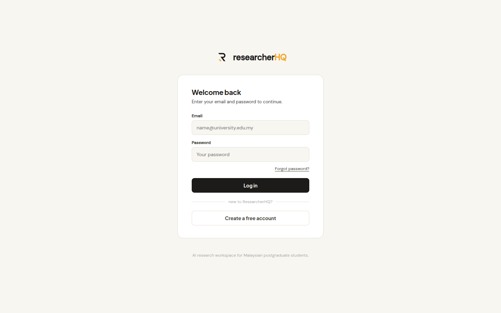
- Jika anda terlupa kata laluan, klik pautan "Forgot password?" — proses ini akan menghantar kata laluan sementara baharu ke emel anda, sama seperti langkah pendaftaran.
3Profil Ringkas (Log Masuk Pertama Kali)
Pada log masuk pertama kali, satu tetingkap kecil akan muncul meminta maklumat ringkas tentang anda.
- Isikan "Your full name" (nama penuh) dan "University / Institution name" (nama universiti/institusi anda).
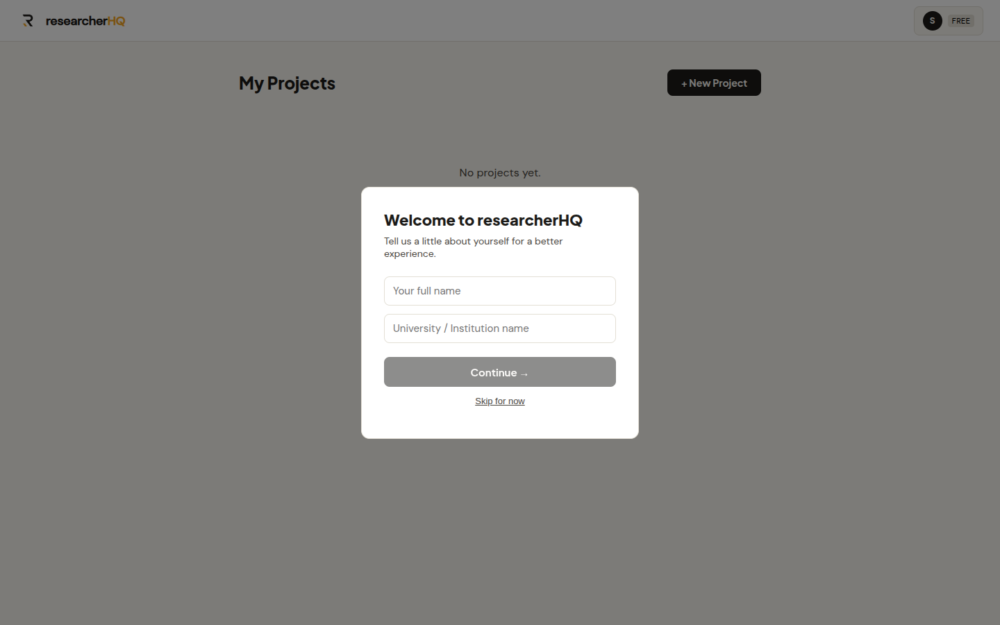
Contoh borang yang telah diisi:
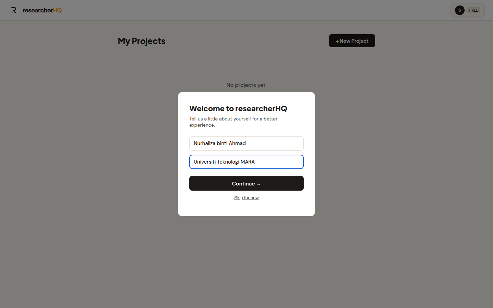
- Klik "Continue →" untuk simpan, atau klik "Skip for now" jika mahu langkau langkah ini buat masa sekarang (anda boleh kemas kini profil kemudian — lihat Bahagian 12).
- Selepas profil disimpan, skrin "Profile saved!" akan muncul dengan butang "Create First Project →" untuk terus ke langkah mencipta projek pertama.
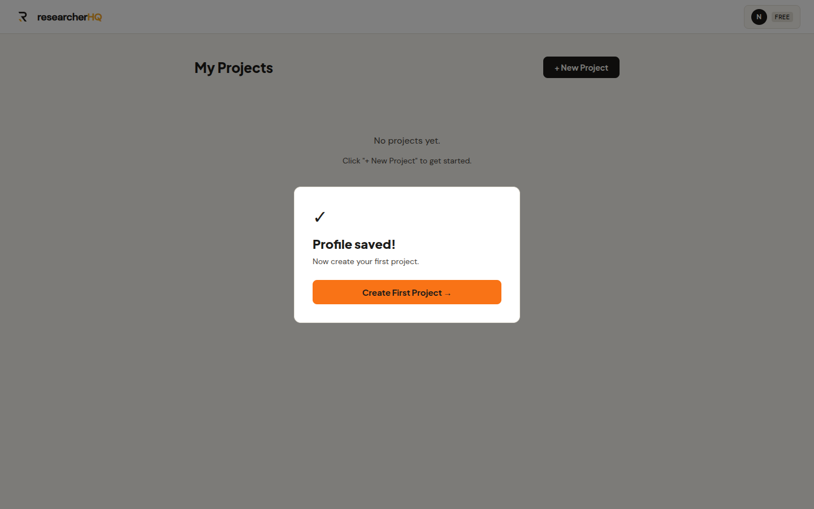
4Cipta Projek Pertama
- Klik butang "+ New Project" di halaman "My Projects".
- Langkah 1 — Masukkan tajuk kajian anda dan pilih bidang penyelidikan daripada senarai (General / Quantitative-Science / Qualitative-Social Science / Law / Medicine-Health).
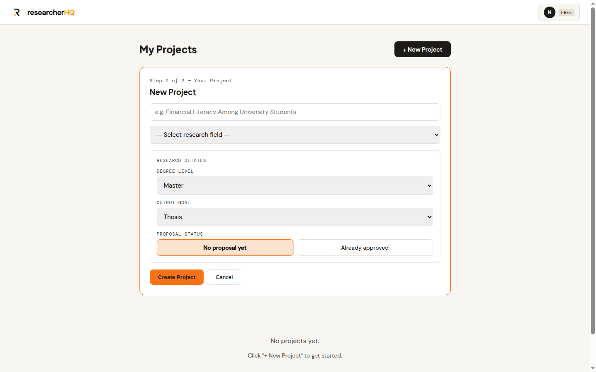
- Langkah 2 (Research Details) — Lengkapkan maklumat berikut:
- Degree Level: Master / PhD / Other
- Output Goal: Thesis / Journal Article / Proposal
- Proposal Status: "No proposal yet" atau "Already approved"
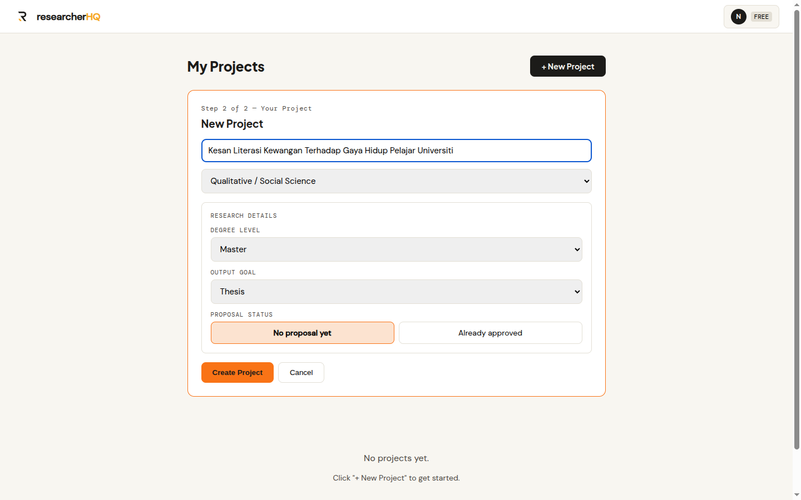
- Klik "Create Project". Anda akan dibawa terus ke ruang kerja projek (lihat Bahagian 5).
Menamakan Semula / Memadam Projek
Di halaman "My Projects", klik ikon "⋯" di sudut kanan kad projek untuk membuka menu Rename (namakan semula) atau Delete (padam).
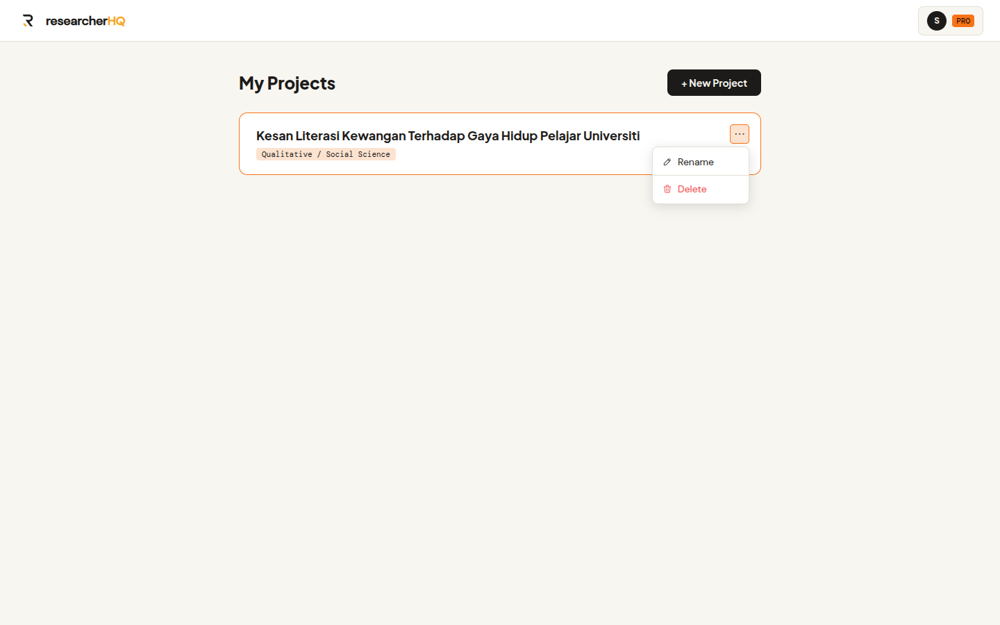
5Kenali Ruang Kerja
Ruang kerja projek ResearcherHQ dibahagikan kepada 4 panel dalam satu skrin:
| Panel | Kedudukan | Fungsi |
|---|---|---|
| Sumber (Sources) | Kiri | Dokumen kajian, cari artikel, rujukan, maklum balas penyelia |
| Editor | Tengah | Tempat menulis kandungan bab tesis |
| Chat | Kanan editor | Berbual dengan AI berdasarkan dokumen anda |
| Struktur Tesis (Thesis Structure) | Paling kanan | Senarai bab, sasaran perkataan, eksport |
Setiap panel Sumber dan Struktur Tesis boleh dikuncupkan (collapse) dengan klik anak panah bujur terapung di garis pembahagi panel.
Pada log masuk pertama ke projek baharu, satu tur ringkas (tooltip bernombor) akan memandu anda melalui setiap panel:
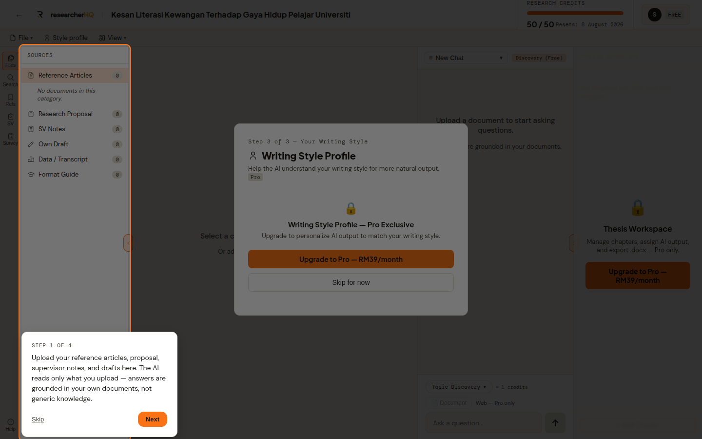
Penting untuk akaun Percuma (Free): Panel Editor dan Struktur Tesis dikunci sepenuhnya untuk pengguna pelan Percuma — anda akan nampak overlay "Thesis Workspace — Manage chapters, assign AI output, and export .docx — Pro only." Untuk menulis bab dan mengurus struktur tesis, akaun perlu dinaik taraf ke Pro (lihat Bahagian 11).
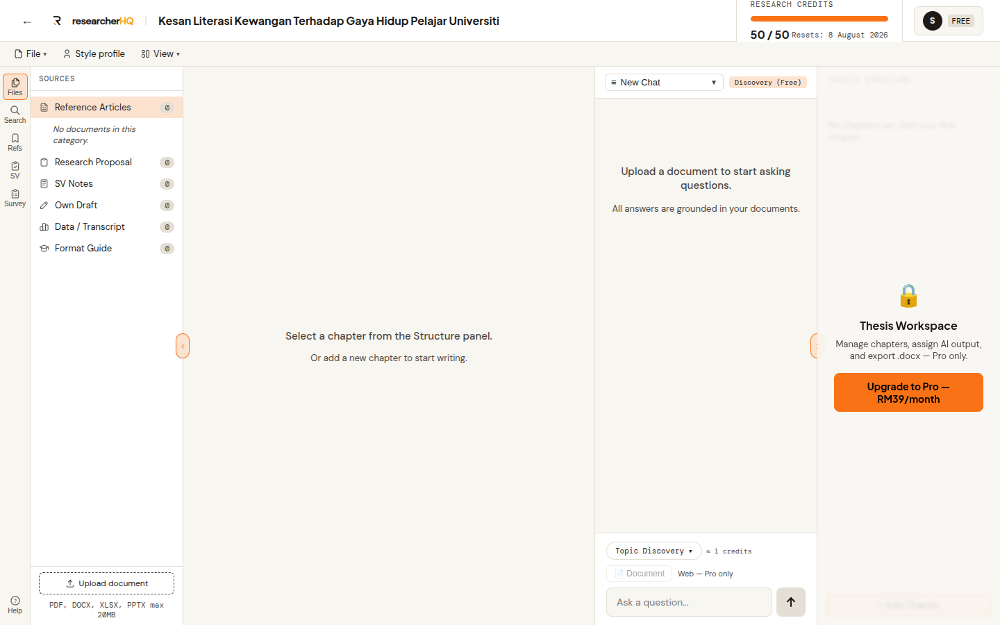
Bar menu di bahagian atas ruang kerja mengandungi: - File — Export Active Chapter, Upload Document, Compile Full Thesis (.docx — Pro sahaja) - Style profile — tetapkan gaya penulisan AI (Pro sahaja, lihat Bahagian 7) - View — pilihan tambahan seperti "Export Google Docs" dan "Bibliography Manager" yang kedua-duanya masih berlabel "Phase 3" dan tidak aktif lagi setakat ini.
6Panel Sumber
Di sisi kiri panel Sumber terdapat rel ikon dengan 6 fungsi:
| Ikon | Label | Fungsi |
|---|---|---|
| 📁 | Files | Senarai dokumen yang dimuat naik |
| 🔍 | Search | Cari Artikel (rujuk akademik luar) |
| 🔖 | Refs | Senarai rujukan automatik |
| 📋 | SV | Maklum Balas Penyelia |
| 📝 | Survey | Modul Soal Selidik (Pro sahaja) |
| ❓ | Help | Bantuan & dokumentasi |
6.1 Muat Naik Dokumen
- Klik "Upload document".
- Pilih fail (PDF, DOCX, XLSX atau PPTX, maksimum 20MB).
- Pada tetingkap "Select Category", pilih kategori dokumen — Reference Articles, Research Proposal, SV Notes, Own Draft, Data / Transcript, atau Faculty Format Guide.
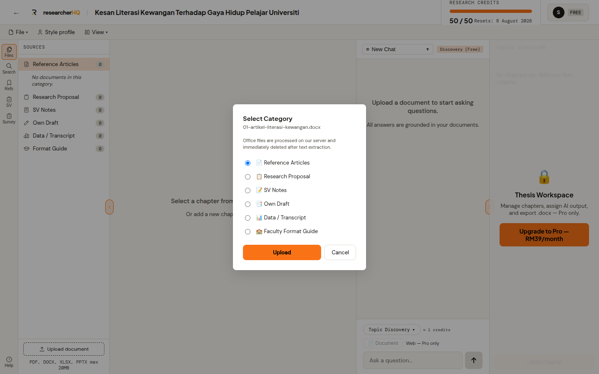
- Klik "Upload". Dokumen akan diproses (embedding) di latar belakang.
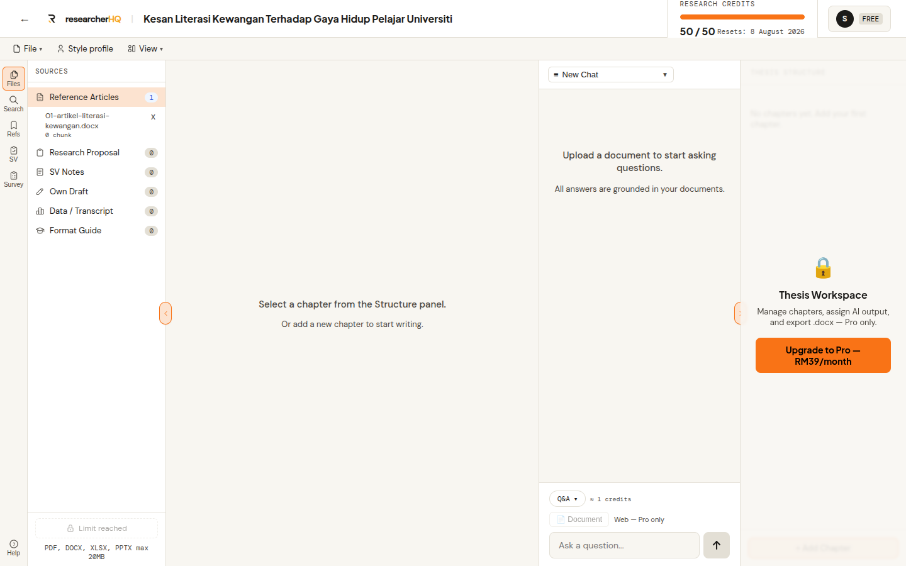
Had muat naik ikut pelan: Akaun Free hanya boleh muat naik 1 dokumen. Akaun Pro boleh muat naik sehingga 5 dokumen.
6.2 Cari Artikel (Search Panel)
- Klik ikon Search (🔍) pada rel ikon.
- Taipkan kata kunci carian, dan (jika perlu) hadkan "From year".
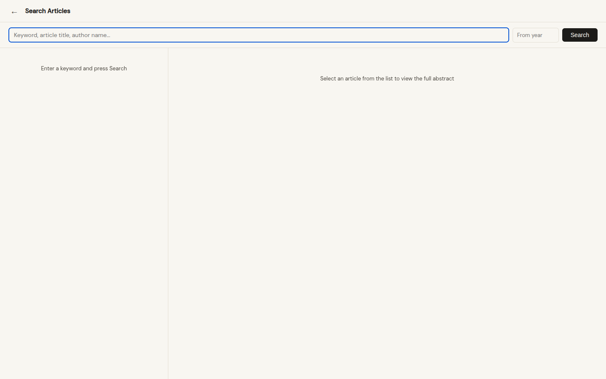
- Klik "Search". Keputusan carian sebenar (dari OpenAlex/Semantic Scholar/CrossRef) akan disenaraikan di kiri.
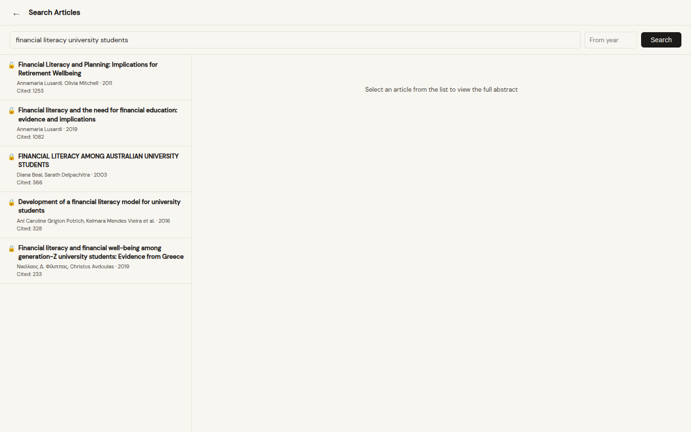
- Klik mana-mana keputusan untuk lihat abstrak penuh di sebelah kanan.
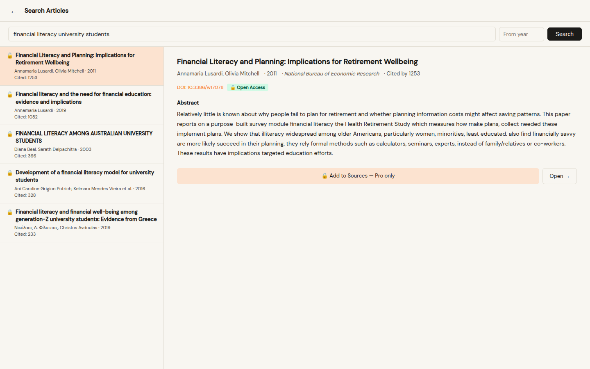
Nota Pro: Butang "Add to Sources" untuk terus tambah artikel ini sebagai dokumen projek adalah fungsi Pro sahaja. Pengguna Free boleh melihat dan membaca abstrak, tetapi perlu naik taraf untuk menambah artikel ke dalam sumber projek.
6.3 Refs (Senarai Rujukan)
Ikon Refs (🔖) BUKAN pengurus rujukan manual — ia adalah senarai rujukan automatik yang dijana daripada dokumen yang telah dipetik (cited) dalam kandungan bab yang anda terima (Accept) daripada cadangan AI. Jika belum ada kandungan yang dipetik dari mana-mana dokumen, panel ini akan kosong dengan mesej "No references yet. Ask the AI and accept output to a chapter to generate a reference list."
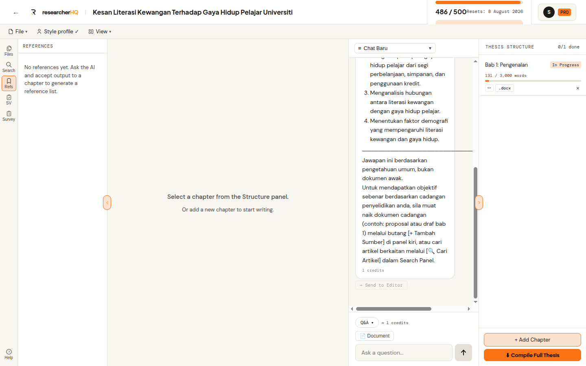
7Panel Chat
- Pilih mod jawapan melalui pill di bahagian bawah panel chat. Terdapat 6 mod tersedia (bukan 3): Q&A (1 kredit), Key Findings (3 kredit), Executive Summary (5 kredit, Pro), Literature Review (10 kredit, Pro), Research Gap (10 kredit, Pro), dan Topic Discovery (1 kredit — hanya untuk projek yang belum ada cadangan penyelidikan diluluskan).
- Taipkan soalan anda di ruangan "Ask a question..." dan hantar.
- Setiap jawapan AI dipaparkan bersama label sumber:
- 📄 Your documents — jawapan berdasarkan dokumen anda, disertakan petikan bernombor.
- 🌐 Web sources — jawapan berdasarkan carian web (Pro sahaja).
- ⚠ General knowledge — verify independently — jawapan berdasarkan pengetahuan umum AI (bukan dokumen anda) — sahkan sendiri sebelum digunakan.
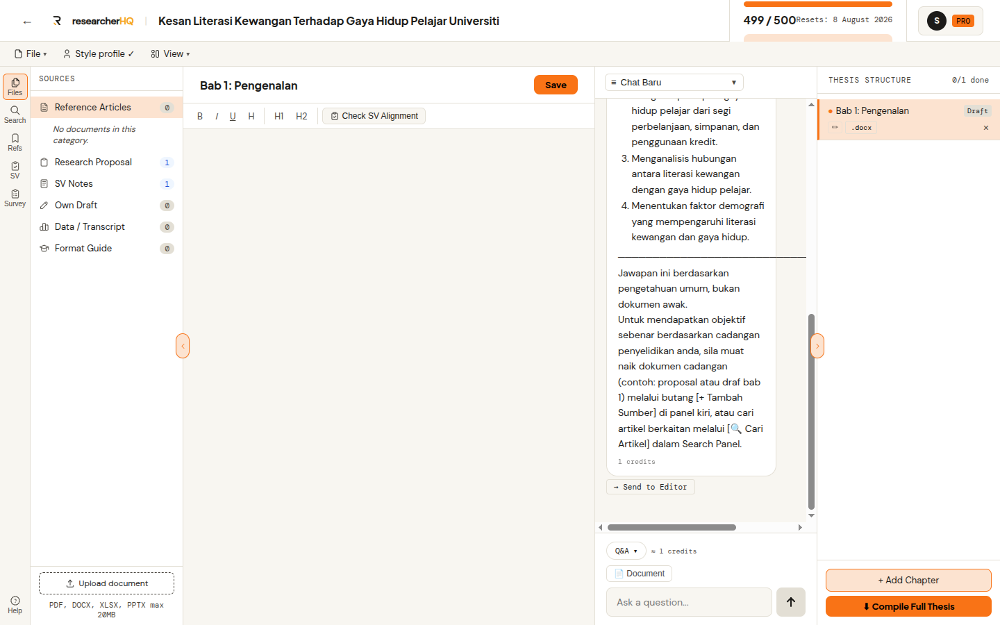
- Setiap jawapan AI mempunyai butang "→ Send to Editor" untuk hantar jawapan tersebut sebagai cadangan ke bab yang aktif (lihat Bahagian 8). Butang ini tidak aktif jika tiada bab dipilih.
Style Profile (Profil Gaya Penulisan) — Pro sahaja
Klik "Style profile" pada bar menu atas untuk tetapkan gaya penulisan AI mengikut keutamaan anda: panjang ayat, gaya akademik (formal/moden), dan contoh tulisan sendiri.
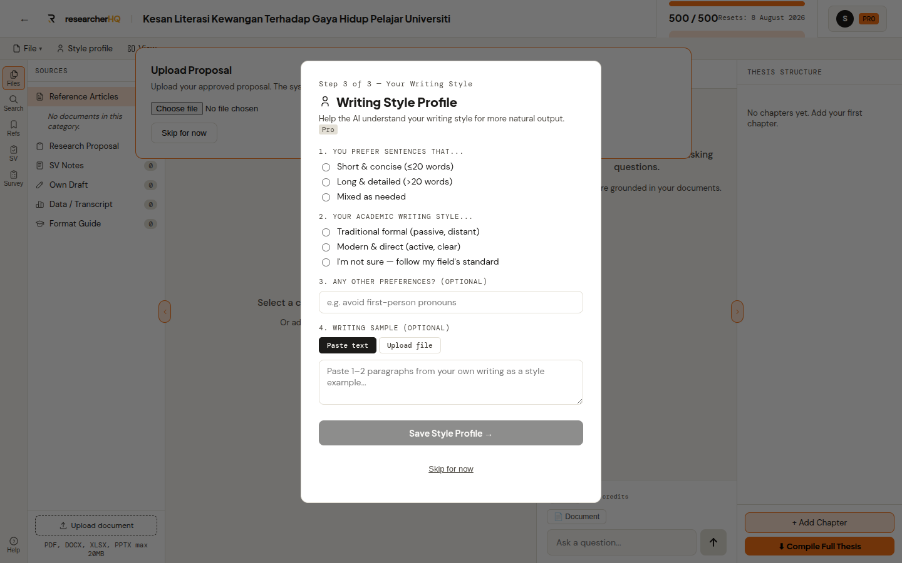
Isikan pilihan yang berkaitan, kemudian klik "Save Style Profile →".
Versi Mudah Alih (Mobile)
Pada skrin telefon, panel Chat diakses melalui tab "Chat" di bar bawah.
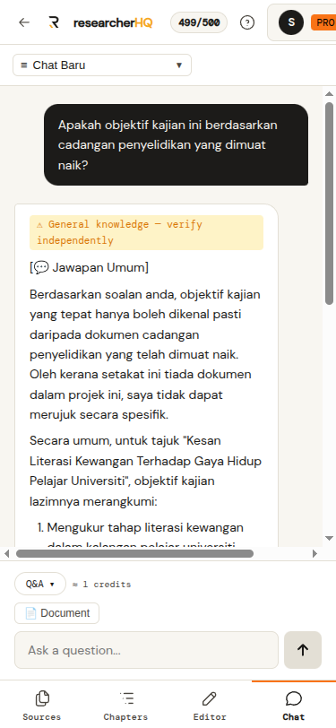
8Editor Bab & Struktur Tesis
Nota: Bahagian ini (Editor + Struktur Tesis) adalah fungsi Pro sahaja. Lihat amaran di Bahagian 5.
8.1 Tambah Bab
- Di panel Struktur Tesis (kanan sekali), klik "+ Add Chapter".
- Taipkan nama bab (contoh: "Bab 1: Pengenalan") dan klik "Add".
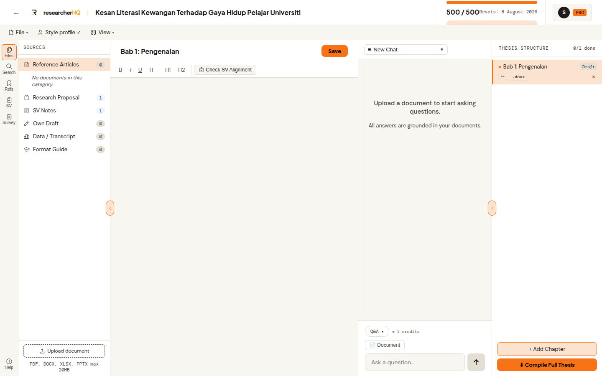
8.2 Cara Cadangan AI Masuk ke Bab (Send to Editor → Accept/Reject)
Ini BUKAN proses satu langkah sahaja — ia gabungan dua langkah:
- Di panel Chat, klik "→ Send to Editor" pada jawapan AI yang mahu digunakan (rujuk Bahagian 7).
- Panel Editor akan bertukar ke mod cadangan (Suggestion mode), memaparkan amaran:
"This is an AI suggestion — click Accept to add to chapter, or Reject to discard."
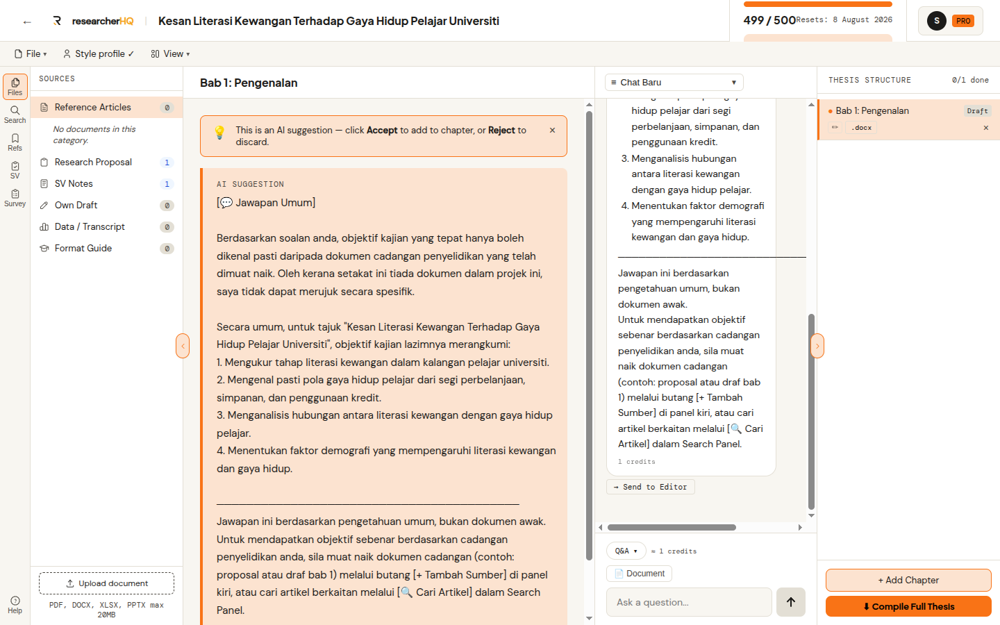
- Baca cadangan dengan teliti, kemudian klik "Accept" untuk masukkan ke bab, atau "Reject" untuk buang cadangan tersebut (kandungan sedia ada bab tidak akan berubah jika Reject).
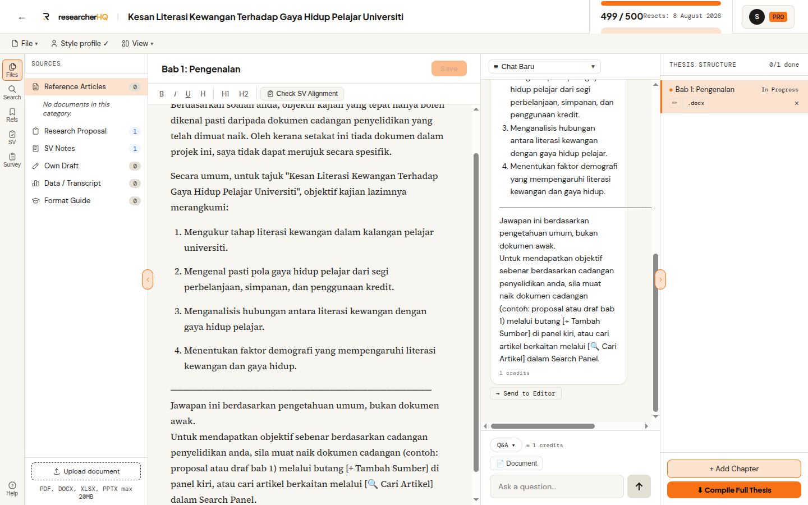
Cadangan AI tidak pernah dimasukkan secara automatik ke dalam bab tanpa anda menyemak dan menekan Accept terlebih dahulu.
8.3 Sasaran Perkataan (Word Count Target)
- Di panel Struktur Tesis, tuding tetikus (hover) pada bab, klik "+ Set target".
- Masukkan sasaran jumlah perkataan (contoh: 3000) dan tekan Enter.
- Bar kemajuan akan menunjukkan jumlah perkataan semasa berbanding sasaran.
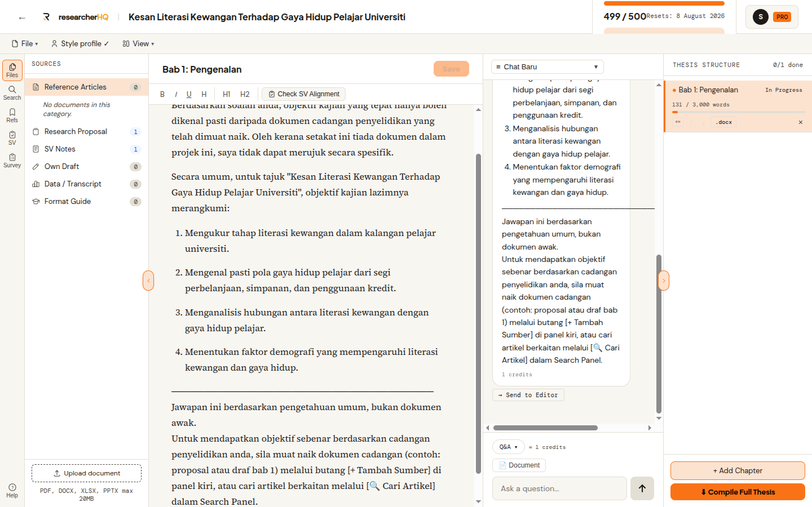
8.4 Semak Keselarasan Penyelia (Check SV Alignment)
Klik butang "Check SV Alignment" di bahagian atas Editor untuk semak kandungan bab semasa terhadap senarai maklum balas penyelia yang masih terbuka (Open) — lihat Bahagian 9.
8.5 Eksport
- Setiap bab boleh dieksport secara individu melalui butang ".docx" di sebelah nama bab dalam panel Struktur Tesis.
- Untuk eksport keseluruhan tesis sekali gus, klik "⬇ Compile Full Thesis" (Pro sahaja) atau melalui menu File → Compile Full Thesis (.docx).
Versi Mudah Alih (Mobile)
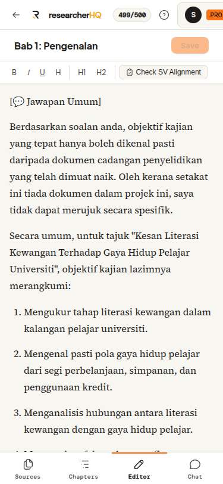
9Semak Maklum Balas Penyelia (SV Feedback)
- Muat naik dokumen nota penyelia anda dengan kategori "SV Notes" (lihat Bahagian 6.1). Sistem akan secara automatik mengekstrak setiap item maklum balas daripada dokumen tersebut.
- Klik ikon SV pada rel ikon panel Sumber untuk lihat senarai maklum balas, dikumpulkan mengikut status: Open, Addressed, Dismissed.
- Tukar status setiap item melalui dropdown di sebelah kanan item tersebut, mengikut sejauh mana anda telah menangani maklum balas itu dalam penulisan.
- Gunakan butang "Check SV Alignment" di Editor (Bahagian 8.4) untuk semak sama ada kandungan bab semasa telah menangani setiap item maklum balas terbuka — hasilnya dipaparkan berserta cadangan penambahbaikan untuk setiap item.
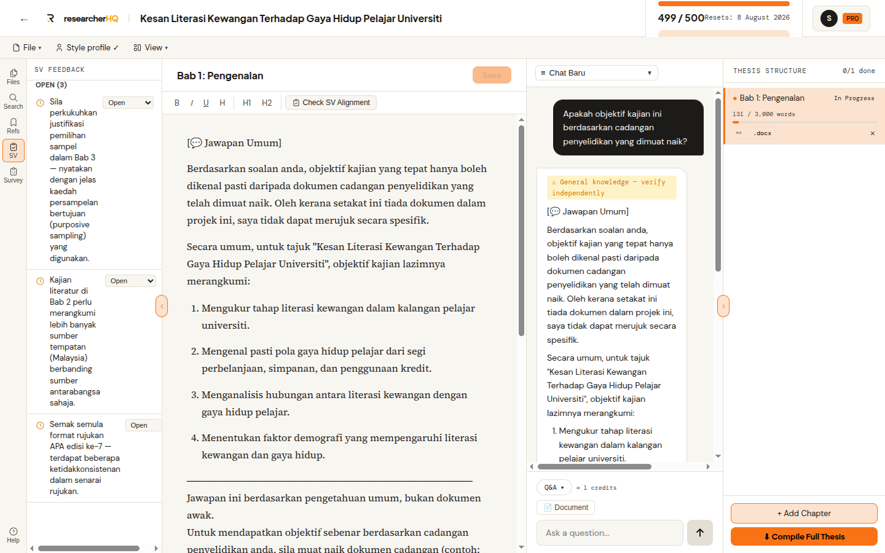
10Modul Soal Selidik (Survey) — Pro sahaja
Nota: Keseluruhan Modul Soal Selidik adalah fungsi Pro sahaja. Pengguna Free akan nampak skrin berikut apabila cuba mengaksesnya:
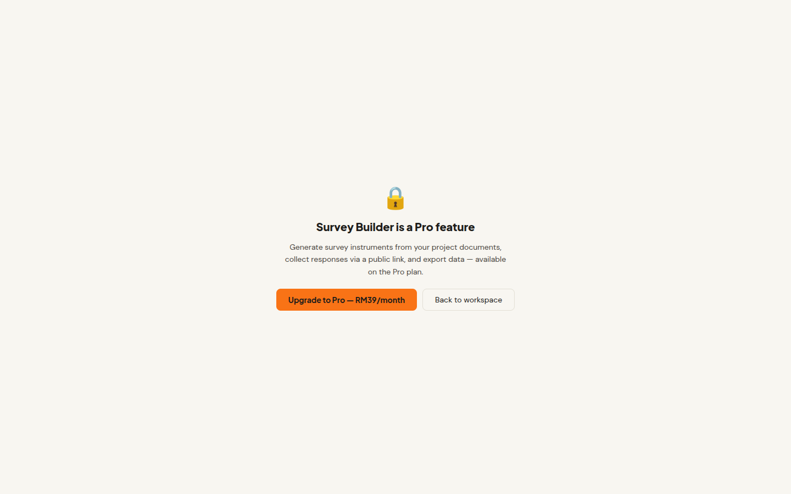
Modul ini dibahagikan kepada 3 peringkat: 1. Build → 2. Collect → 3. Analyse.
10.1 Build (Bina)
- Klik ikon Survey pada rel ikon, atau navigasi ke Modul Soal Selidik projek anda.
- Klik "Generate with AI — 10 credits" untuk jana draf soal selidik berdasarkan dokumen projek anda (akan diminta pengesahan kos kredit). Atau bina secara manual dengan "+ Section" / "+ Question", atau "Import from file".
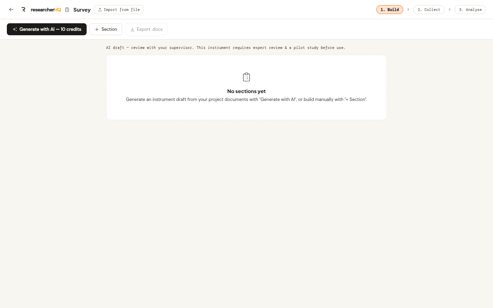
- Draf soal selidik akan dipaparkan mengikut bahagian dan soalan.
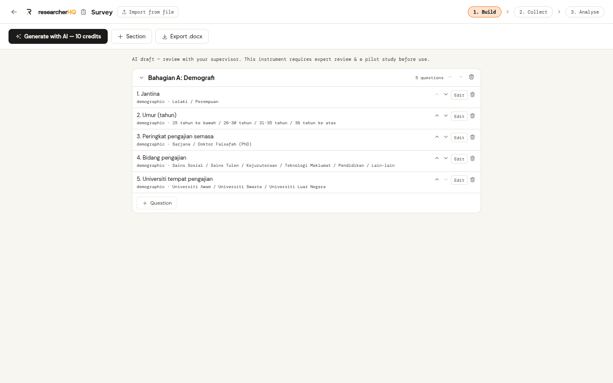
Amaran berikut sentiasa dipaparkan di bahagian Build dan wajib dikekalkan:
"AI draft — review with your supervisor. This instrument requires expert review & a pilot study before use."
10.2 Collect (Kumpul)
- Beralih ke tab "2. Collect".
- Pilih jenis kutipan data:
- Pilot — ujian percubaan (maksimum 50 respons), boleh dibuka semula untuk diedit selepas kajian rintis; respons pilot disimpan untuk analisis kebolehpercayaan.
- Actual — kutipan data sebenar (sehingga 1,000 respons).
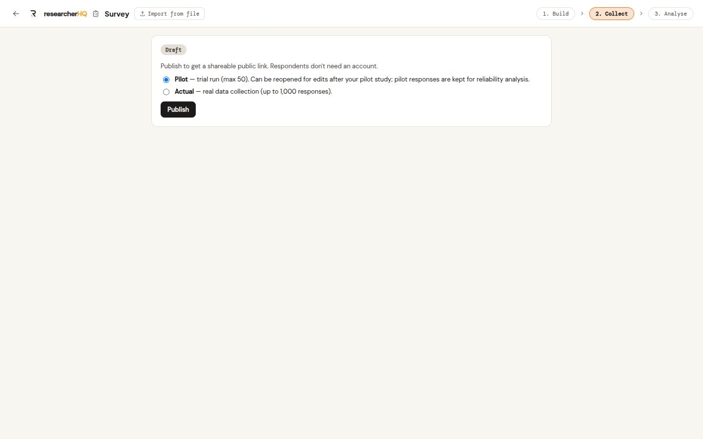
- Klik "Publish". Anda akan diminta mengesahkan bahawa struktur soal selidik akan dikunci semasa mengumpul respons.
- Satu pautan awam (public link) akan dijana. Responden tidak perlu mempunyai akaun untuk mengisi borang.
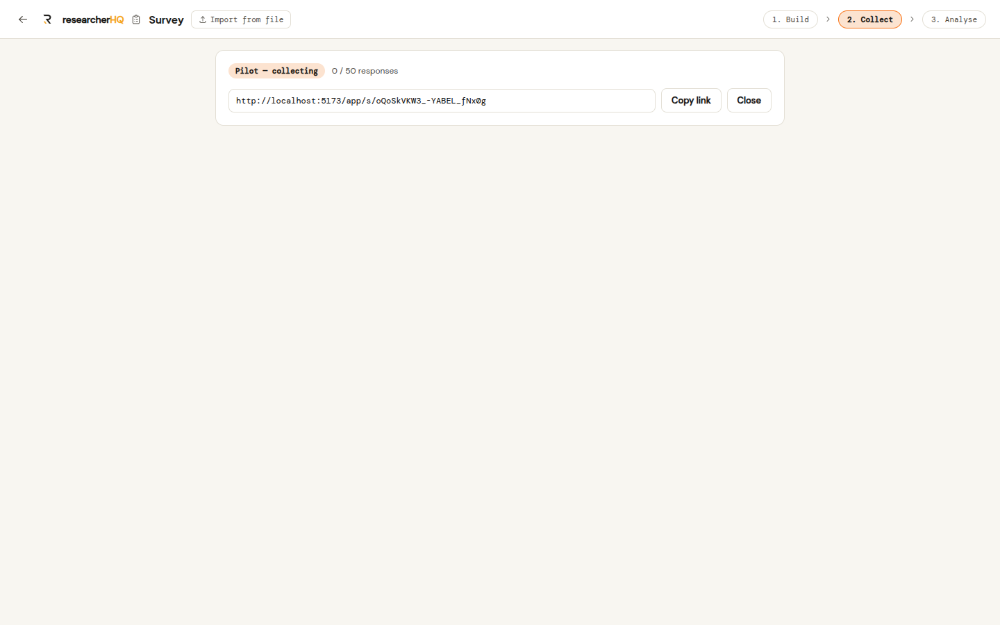
Borang awam yang dilihat oleh responden:
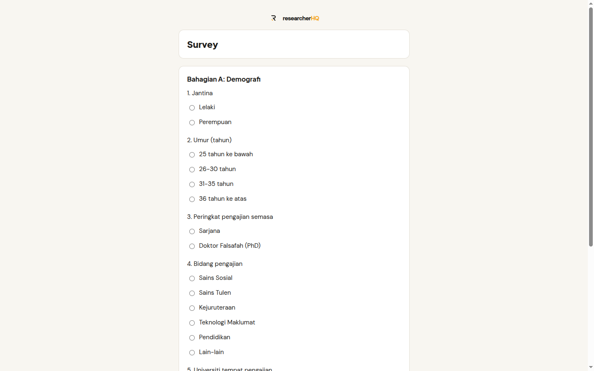
10.3 Analyse (Analisis)
- Beralih ke tab "3. Analyse". Halaman ini juga memaparkan amaran tetap:
"Auto-generated results — review with your supervisor before using in your thesis."
- Pilih dataset (Actual atau Pilot) dan jenis ujian statistik daripada 11 pilihan yang tersedia: Descriptive, Reliability (Cronbach's alpha), Normality, Independent t-test, Paired t-test, One-way ANOVA, Mann-Whitney U, Kruskal-Wallis, Wilcoxon signed-rank, Correlation, dan Chi-square. Jika tidak pasti ujian mana yang sesuai, klik "Help me choose".
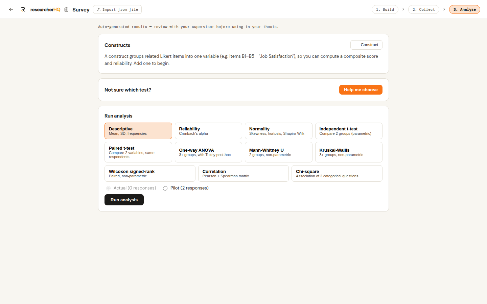
- Klik "Run analysis" untuk jana keputusan (jadual statistik).
- Klik "Interpret (3 credits)" untuk jana naratif interpretasi automatik daripada AI (boleh pilih bahasa: Bahasa Melayu / English).
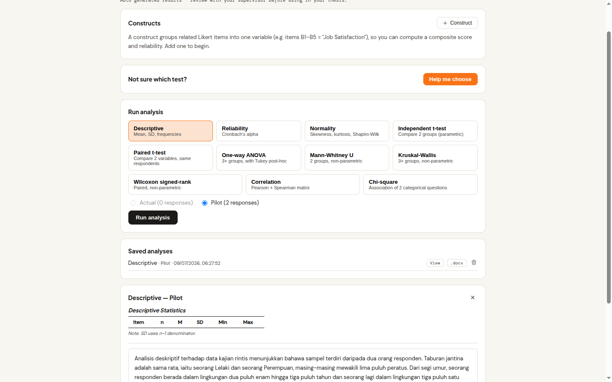
- Setiap naratif interpretasi wajib disertakan ayat amaran berikut pada penghujungnya (kekal verbatim, jangan diringkaskan):
"Interpretasi ini dijana secara automatik. Sahkan dengan penyelia anda sebelum digunakan."
(English: "This interpretation was generated automatically. Verify with your supervisor before use.")
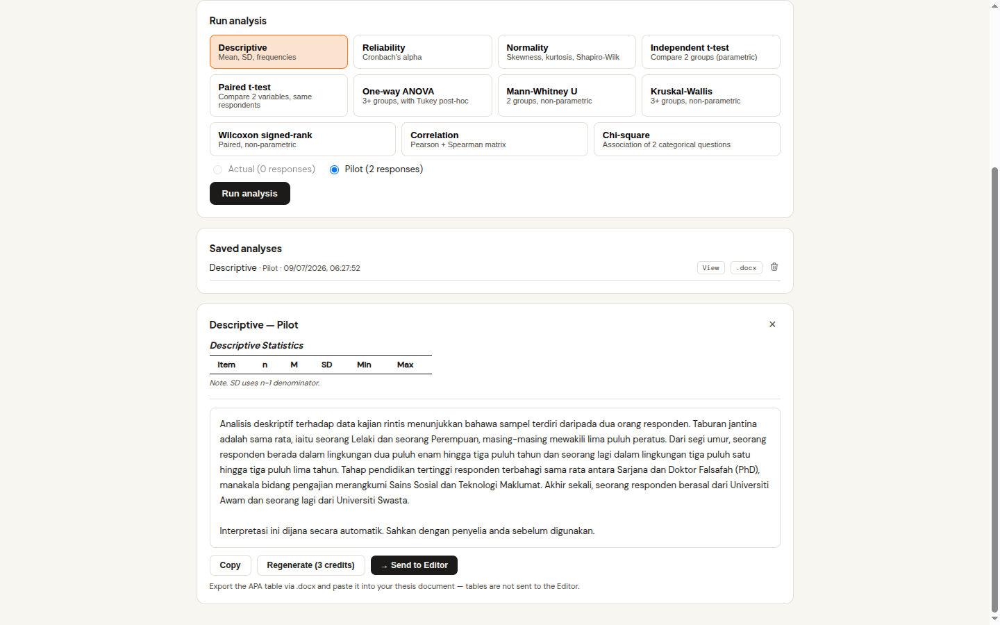
- Gunakan "→ Send to Editor" untuk hantar naratif ini (bersama sebutan APA) ke bab tesis anda — ia turut melalui proses Accept/Reject yang sama seperti Bahagian 8.2.
11Kredit Kajian & Pelan (Free vs Pro)
Baki kredit kajian anda dipaparkan di bar atas ruang kerja projek ("Research Credits"), dan juga di halaman Account Settings.
Akaun Pro:
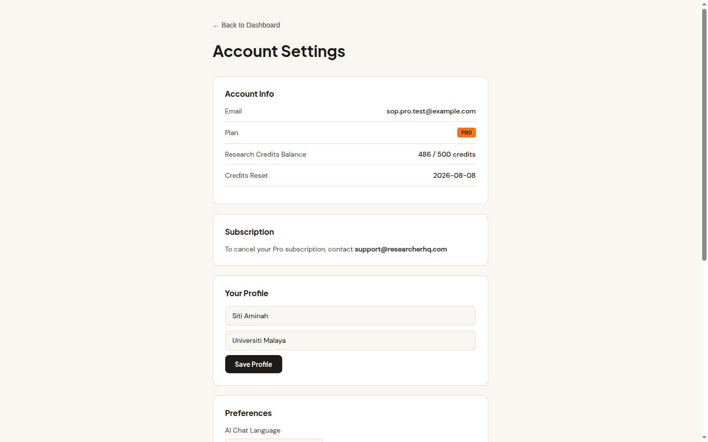
- Baki kredit lebih tinggi (contoh: 500 kredit/bulan berbanding 50 untuk Free).
- Boleh top up kredit tambahan (+200 kredit — RM10) melalui bar atas ruang kerja.
- Untuk membatalkan langganan Pro, hubungi support@researcherhq.com secara terus (tiada butang batal-sendiri dalam aplikasi).
Akaun Free:
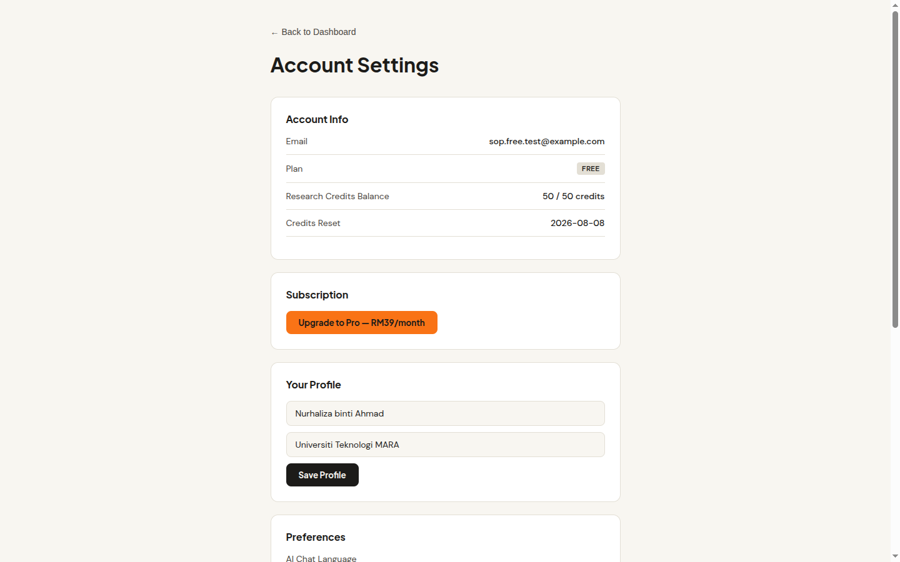
- Baki kredit lebih rendah dan pelan dipaparkan sebagai "FREE".
- Butang "Upgrade to Pro — RM39/month" dipaparkan untuk naik taraf terus daripada halaman ini.
12Kemas Kini Profil
Di halaman Account Settings (boleh diakses melalui menu profil di bar atas):
- Your Profile — kemas kini nama penuh dan nama institusi, kemudian klik "Save Profile".
- Preferences — tukar bahasa chat AI (AI Chat Language: Bahasa Malaysia / English), klik "Save".
- Change Password — tetapkan kata laluan tetap baharu (minimum 8 aksara), klik "Update Password".
- Delete Account — padam akaun secara kekal. Dokumen dan perbualan akan dipadam selama-lamanya; rekod transaksi pembayaran disimpan secara tanpa nama untuk tujuan audit kewangan.
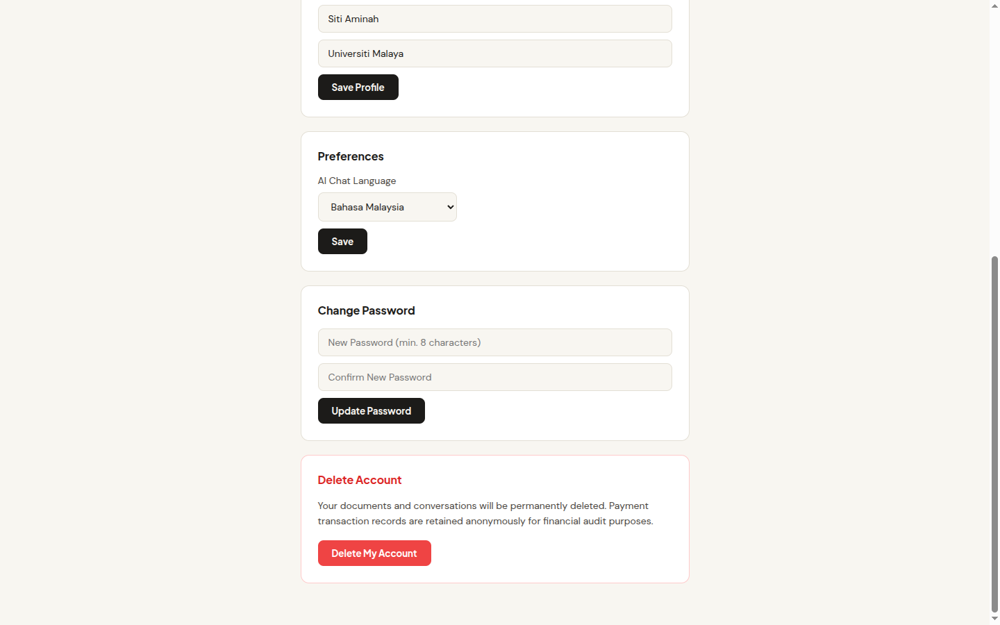
13Pusat Bantuan
Akses Pusat Bantuan melalui ikon Help (❓) pada rel ikon panel Sumber, atau terus ke halaman bantuan. Kandungan Pusat Bantuan sudah tersedia dalam Bahasa Melayu, dibahagikan kepada topik:
Bermula · Urus Dokumen (Sources) · Chat dengan AI · Editor & Struktur Thesis · Style Profile · Maklum Balas Penyelia · Kredit & Pelan · Soal Selidik (Pro sahaja) · Soalan Lazim
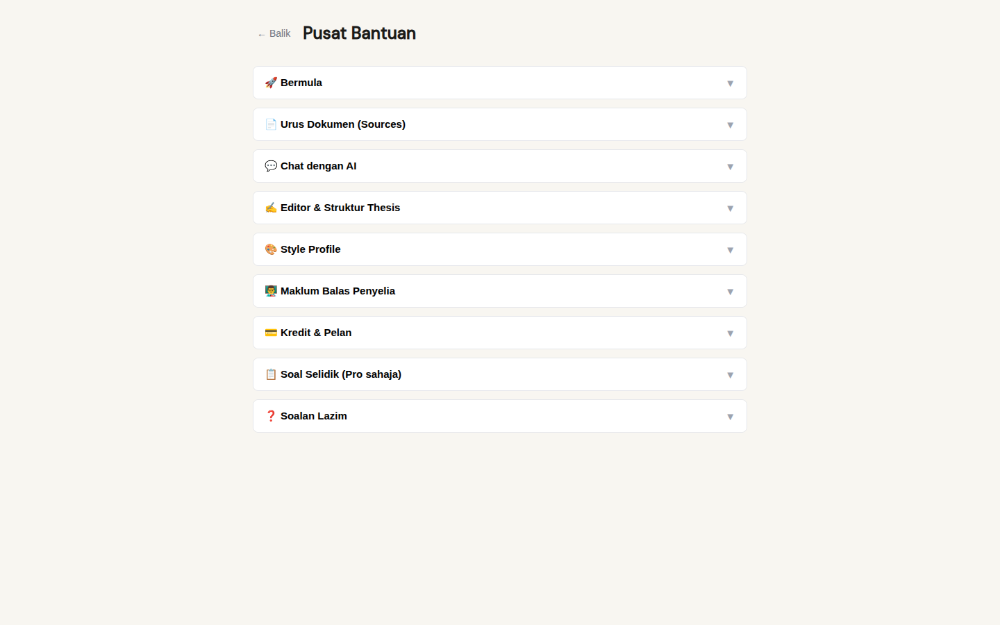
Bahagian "Soalan Lazim" (FAQ) turut menjawab persoalan penting seperti keselamatan dokumen, kemungkinan AI "mereka" maklumat (hallucinate), dan cara menghubungi sokongan.
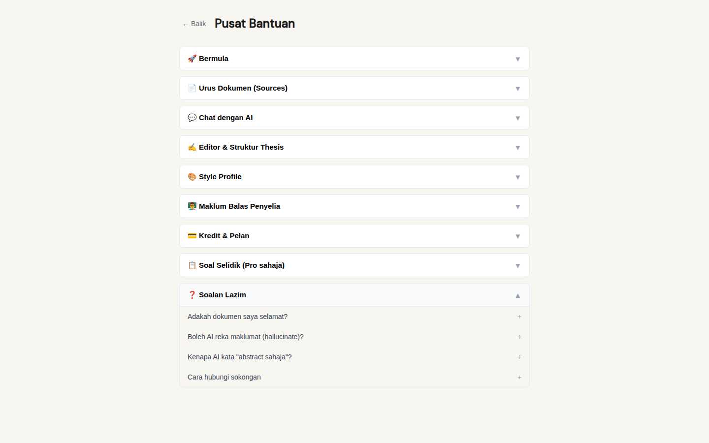
14Hubungi Sokongan
- Navigasi ke halaman "Report an Issue".
- Pilih Category (contoh: Bug / Technical Issue).
- Terangkan isu anda dengan jelas di ruangan Description.
- Klik "Send Report".
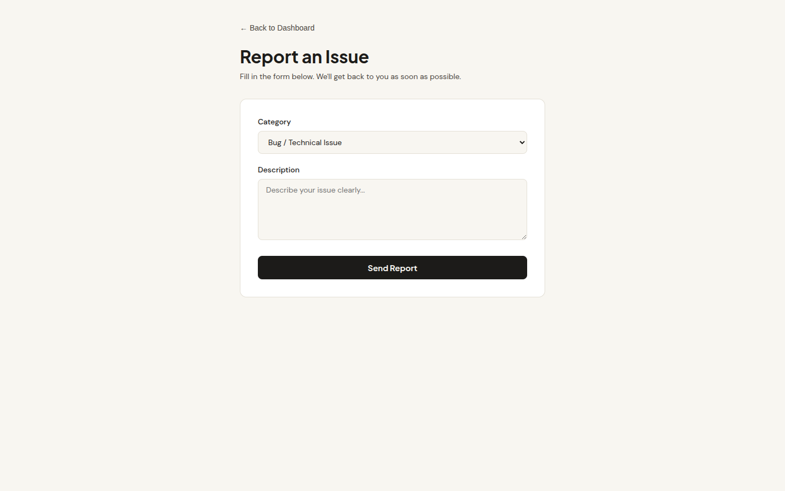
Panduan ini disediakan oleh Claude Code berdasarkan audit langsung aplikasi ResearcherHQ
(commit 3f4d58d), 9 Julai 2026. Rujuk ringkasan penutup berasingan untuk senarai
percanggahan yang dijumpai berbanding storyboard asal, dan keputusan yang perlu dibuat
oleh Bos sebelum panduan ini digunakan sebagai bahan rasmi.